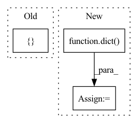

Pattern ID :1384
Before Change
self.paths = nn.ModuleList()
for k, d in zip(kernel_size, dilation):
p = _get_padding(k, stride, d)
self.paths.append(nn.Sequential(OrderedDict([
("conv", nn.Conv2d(
in_channels, out_channels, kernel_size=k, stride=stride, padding=p,
dilation=d, groups=groups, bias=False)),
("bn", norm_layer(out_channels)),
("act", act_layer(inplace=True))After Change
out_channels = out_channels // num_paths
groups = min(out_channels, groups)
conv_kwargs = dict(
stride=stride, groups=groups, drop_block=drop_block, act_layer=act_layer, norm_layer=norm_layer)
self.paths = nn.ModuleList([
ConvBnAct(in_channels, out_channels, kernel_size=k, dilation=d, **conv_kwargs)
for k, d in zip(kernel_size, dilation)])
In pattern: SUPERPATTERN
Frequency: 6
Non-data size: 3
Instances Fragment ID: 3740989
Project Name: feng-lab/pytorch-image-models
Commit Name: 9f11b4e8a25495874d84a56d4ca11af191a01324
Time: 2020-02-01
Author: rwightman@gmail.com
File Name: timm/models/conv2d_layers.py
M Class Name: SelectiveKernelConv
N Class Name: SelectiveKernelConv
M Method Name: __init__(14)
N Method Name: __init__(13)
M Parent Class: nn.Module
N Parent Class: nn.Module
M File Name: timm/models/conv2d_layers.py
N File Name: timm/models/conv2d_layers.py
M Start Line: 280
M End Line: 311
N Start Line: 303
N End Line: 333
Before Change
self.register_buffer(k, v)
else:
setattr(self, k, None)
self.processors = nn.ModuleList([] ) // register modules for .to(device)
self.dag_summary = {}
for processor, connections in self.dag:
self.processors.append(processor)After Change
super().__init__()
self.processors = nn.ModuleList([p for p, _c in dag])
self.connections = tuple(dict( c) for _p, c in dag)
self.name = name
self.ext_param_sizes = {}
self.processor_names = [processor.name for processor in self.processors] Fragment ID: 3740988
Project Name: hyakuchiki/realtimeddsp
Commit Name: 18a14dbae33c975de26b9dcd41d02e5a59d0d5f9
Time: 2022-05-16
Author: naotakemasuda@g.ecc.u-tokyo.ac.jp
File Name: diffsynth/synthesizer.py
M Class Name: Synthesizer
N Class Name: Synthesizer
M Method Name: __init__(4)
N Method Name: __init__(5)
M Parent Class: nn.Module
N Parent Class: nn.Module
M File Name: diffsynth/synthesizer.py
N File Name: diffsynth/synthesizer.py
M Start Line: 12
M End Line: 50
N Start Line: 24
N End Line: 34
Before Change
skip_dims = []
down_stage_parameters = [
in_out,
nested_unet_depths,
num_blocks_per_stageAfter Change
// attn kwargs
attn_kwargs = dict(
heads = attn_heads,
dim_head = attn_dim_head
)
// modules for all layers
skip_dims = [] Fragment ID: 3740991
Project Name: lucidrains/x-unet
Commit Name: f95f833eade55222c51aa137f446b0fdc9669ed2
Time: 2022-08-19
Author: lucidrains@gmail.com
File Name: x_unet/x_unet.py
M Class Name: XUnet
N Class Name: XUnet
M Method Name: __init__(18)
N Method Name: __init__(15)
M Parent Class: nn.Module
N Parent Class: nn.Module
M File Name: x_unet/x_unet.py
N File Name: x_unet/x_unet.py
M Start Line: 283
M End Line: 311
N Start Line: 300
N End Line: 400
Before Change
class OutputLayer(nn.Module):
def __init__(self, task="binary", use_bias=True):
if task not in [ "binary", "multiclass", "regression"After Change
if not output_fn:
raise ValueError("Arg output_fn must be givin")
if not output_fn_args:
output_fn_args = dict()
self.use_bias = use_bias
self.output_fn = output_fn
self.output_fn_args = output_fn_args Fragment ID: 3740997
Project Name: ryantd/veloce
Commit Name: 6275f02f012cd48b84824b7d67f3b13f7a778b3b
Time: 2022-01-04
Author: xiaoyu.zhai@hotmail.com
File Name: phetware/layer/core.py
M Class Name: OutputLayer
N Class Name: OutputLayer
M Method Name: __init__(4)
N Method Name: __init__(3)
M Parent Class: nn.Module
N Parent Class: nn.Module
M File Name: phetware/layer/core.py
N File Name: phetware/layer/core.py
M Start Line: 57
M End Line: 62
N Start Line: 56
N End Line: 65
Before Change
self.seq_length = self.num_patches // self.num_blocks[0]
// Build up each hierarchical level
self.levels = nn.ModuleList([] )
self.block_aggs = nn.ModuleList([])
drop_path_rates = [x.item() for x in torch.linspace(0, drop_path_rate, sum(depths))]
for lix in range(self.num_levels):After Change
levels.append(NestLevel(
self.num_blocks[i], self.block_size, self.seq_length, num_heads[i], depths[i], dim, prev_dim,
mlp_ratio, qkv_bias, drop_rate, attn_drop_rate, dp_rates[i], norm_layer, act_layer, pad_type=pad_type))
self.feature_info += [dict(num_chs=dim, reduction=curr_stride, module=f"levels.{i}") ]
prev_dim = dim
curr_stride *= 2
self.levels = nn.Sequential(*levels) Fragment ID: 3740998
Project Name: feng-lab/pytorch-image-models
Commit Name: 81cd6863c8c9515de8884e8a8ea0445ec08b4486
Time: 2021-07-05
Author: rwightman@gmail.com
File Name: timm/models/nest.py
M Class Name: Nest
N Class Name: Nest
M Method Name: __init__(19)
N Method Name: __init__(19)
M Parent Class: nn.Module
N Parent Class: nn.Module
M File Name: timm/models/nest.py
N File Name: timm/models/nest.py
M Start Line: 216
M End Line: 301
N Start Line: 220
N End Line: 300